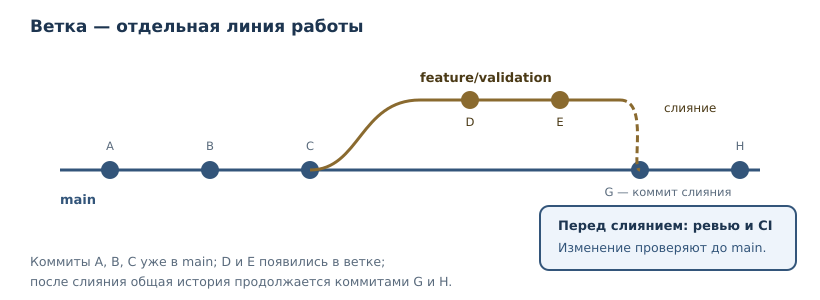
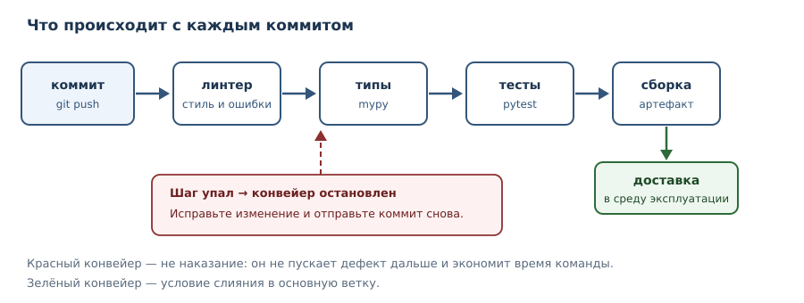

Git, CI, релизы и сопровождение
Командная работа с кодом, автоматические проверки, версионирование и поддержка системы в эксплуатации.
В этой главе
До этой главы вы работали с кодом в одиночку и «здесь и сейчас». Настоящая разработка устроена иначе: код меняется десятки раз в день, изменения делают несколько человек, а ошибка в выпущенной версии стоит дорого. Поэтому инженерная практика строится вокруг трёх механизмов: истории изменений, автоматической проверки каждого изменения и управляемого выпуска.
Эта глава — о том, как код живёт во времени: как фиксировать изменения, как не пускать дефекты в основную ветку, как выпускать версии и как понимать, что происходит в работающей системе.
45.1 Контроль версий: зачем он нужен
Контроль версий — система, которая хранит историю изменений файлов и позволяет вернуться к любому зафиксированному состоянию. Он решает четыре задачи, с которыми «папка с копиями» не справляется:
- История. Видно, кто, когда и зачем изменил каждую строку.
- Воспроизводимость. Любую версию можно получить точно в том виде, в котором она была.
- Совместная работа. Изменения нескольких людей объединяются контролируемо, а конфликты обнаруживаются явно.
- Эксперименты без риска. Ветка позволяет пробовать идею, не ломая основную версию.
Git — распределённая система контроля версий: у каждого разработчика есть полная история, а не только последняя версия файлов. Это стандарт индустрии; в этой главе мы разберём минимальный рабочий набор команд. Git — инструмент, а не религия: цель не «идеальная история», а понятность изменений и возможность безопасно откатиться.
45.2 Базовый цикл Git
Рабочий цикл состоит из трёх шагов: изменить файлы, зафиксировать изменения, отправить их в общий репозиторий.
$ git status
On branch main
Changes not staged for commit:
modified: calculator.py
$ git diff calculator.py
diff --git a/calculator.py b/calculator.py
index 3f9c1a2..8b7d4e1 100644
--- a/calculator.py
+++ b/calculator.py
@@ -3,6 +3,9 @@ def add(a, b):
return a + b
+def subtract(a, b):
+ return a - b
+
$ git add calculator.py
$ git commit -m "Добавить функцию вычитания"
[main 3f9c1a2] Добавить функцию вычитания
1 file changed, 3 insertions(+)
$ git push origin main
Обратите внимание на git status и git diff — это две команды, которые
стоит выполнять перед каждым коммитом. Они отвечают на вопросы «что я изменил»
и «то ли я изменил», и предотвращают большинство случайных коммитов.
Коммит — зафиксированная версия изменений с сообщением и автором. Хороший коммит обладает двумя свойствами:
- атомарность: одна логическая порция изменений, а не «всё за день»;
- понятное сообщение: что изменилось и, главное, зачем.
Плохо: fix, update, правки. Хорошо: Исправить округление при расчёте скидки, Вынести валидацию в отдельный модуль. Сообщение пишется в
повелительном наклонении, как указание: «Добавить», «Исправить», «Удалить».
45.3 Ветки и слияние
Ветка — независимая линия изменений. Основная ветка (main) всегда должна
быть в рабочем состоянии; новая функциональность разрабатывается в отдельной
ветке и затем сливается.

$ git switch -c feature/validation
$ # ... изменения, коммиты ...
$ git push -u origin feature/validation
$ # ... после ревью и зелёного CI ...
$ git switch main
$ git merge feature/validation
Слияние объединяет изменения. Если две ветки изменили одни и те же строки, возникает конфликт: Git не угадывает, какой вариант правильный, и просит человека решить. Конфликт — не сбой, а нормальный сигнал: две линии изменений пересеклись, нужно осознанно выбрать результат.
Практические правила:
- ветка живёт недолго; чем дольше, тем больше конфликтов;
- из основной ветки регулярно забирайте изменения (
git pull), чтобы расходиться меньше; - не делайте
push --forceв общую ветку: это переписывает историю и ломает работу коллег; - удаляйте слитые ветки, иначе их список превращается в свалку.
45.4 Ревью кода
Ревью кода — проверка изменения другим человеком до включения в основную ветку. Цели: найти дефекты, передать знание, выровнять стиль. Ревью — не контроль и не демонстрация превосходства; это дешёвый способ найти проблему до пользователя.
Что смотреть в первую очередь:
- Корректность — решает ли код задачу, есть ли граничные случаи.
- Читаемость — поймёт ли это через полгода другой человек.
- Тесты — покрывают ли они новое поведение и его отсутствие.
- Безопасность — не появляются ли секреты, небезопасный ввод, новые зависимости без причины.
- Область изменения — не затронуто ли лишнее.
Как давать замечания: конкретно, с аргументом, без оценки личности. «Здесь возможна ошибка на пустом списке, предлагаю тест» полезнее, чем «плохо».
45.5 Непрерывная интеграция
CI (непрерывная интеграция) — автоматическая проверка каждого изменения: линтеры, проверка типов, тесты, сборка. Конвейер запускается на каждый коммит и останавливает изменение на первом провале.

Почему это важнее, чем кажется:
- Проверки не забываются. Человек может забыть запустить тесты; конвейер — нет.
- Обратная связь быстрая. Ошибка обнаруживается через минуты, а не через неделю.
- Основная ветка всегда работоспособна. Красный конвейер — стоп-сигнал для слияния.
Минимальный пример конфигурации для GitHub Actions:
name: ci
on: [push, pull_request]
jobs:
test:
runs-on: ubuntu-latest
steps:
- uses: actions/checkout@v4
- uses: astral-sh/setup-uv@v5
with:
python-version: "3.14"
enable-cache: true
- run: uv sync --frozen
- run: uv run ruff check .
- run: uv run mypy src
- run: uv run pytest -q
- run: uv build
Ключевые принципы: зафиксированные версии Python и зависимостей (uv.lock +
--frozen), быстрые шаги сначала, кэширование зависимостей, одинаковые команды
локально и в CI. Локально те же проверки запускаются так:
$ uv run ruff check .
$ uv run mypy src
$ uv run pytest -q
mypy src соответствует раскладке с каталогом src/ из главы 33; если пакет
проекта лежит в tasks/, замените путь на tasks.
Если проверка проходит только в CI — это дефект конфигурации.
45.6 Версионирование и релизы
Семантическое версионирование задаёт номер версии из трёх чисел
MAJOR.MINOR.PATCH:
MAJORувеличивается при несовместимых изменениях;MINOR— при добавлении совместимых возможностей;PATCH— при исправлениях без изменения API.
Проверить формат версии можно программно — это типичная проверка в конвейере:
version = "1.4.2"
major, minor, patch = version.split(".")
print(major, minor, patch)
print(all(part.isdigit() for part in (major, minor, patch)))
1 4 2
True
Журнал изменений (CHANGELOG.md) — понятный пользователю перечень
изменений по версиям. Он нужен не для отчётности, а чтобы потребитель мог
понять, что сломается при обновлении.
# Changelog
## [1.5.0] — 2026-11-01
### Добавлено
- Проверка дубликатов при импорте задач.
### Изменено
- Команда `tasks list` сортирует задачи по статусу.
### Удалено
- Устаревший флаг `--legacy`.
### Исправлено
- Ошибка при пустом названии задачи.
Тег — неизменяемая метка коммита, из которой собирается выпуск. Версия в
pyproject.toml и заголовок CHANGELOG.md должны совпадать с тегом; иначе
потребитель не поймёт, что именно ему поставили. Минимальный сценарий релиза:
$ git tag v1.5.0
$ git push --tags
$ uv build
$ ls dist
tasks_cli-1.5.0-py3-none-any.whl
tasks_cli-1.5.0.tar.gz
Артефакт собирается из тега, а не из рабочей копии: так релиз можно
воспроизвести позже. CI может запускать uv build на теге и прикреплять
dist/* к релизу. Если сборка из тега не воспроизводится, тег не годится для
поставки.
CD (непрерывная доставка) — автоматизированная поставка проверенной версии в среду эксплуатации. Ключевые понятия: артефакт (то, что поставляется), окружение (где запускается), откат (как вернуться к предыдущей версии). Откат проектируется заранее: если вы не знаете, как откатить релиз, вы не готовы его выпускать.
45.7 Сопровождение и мониторинг
После выпуска начинается самая длинная фаза — сопровождение. Мониторинг — наблюдение за системой через метрики, логи и оповещения. Минимальный набор:
- доступность — работает ли система;
- задержка — сколько времени занимают операции;
- ошибки — доля неуспешных запросов;
- насыщение — не кончаются ли ресурсы (память, диск, соединения).
Оповещение должно быть привязано к действию: если на сигнал никто не реагирует, это шум, а не мониторинг. Логи без структуры и уровней превращаются в свалку; структурированное логирование разбирается в главе 37.
Сопровождение — это ещё и работа с долгом: устаревшие зависимости, обходные решения, отсутствие тестов. Технический долг не плох сам по себе; плохо, когда он невидим. Ведите список известных проблем и возвращайтесь к нему регулярно, а не только при аварии.
45.8 Типичные ошибки
- Коммит секретов. Ключ, попавший в историю Git, остаётся там навсегда;
его нужно считать скомпрометированным и заменить. Секреты хранят в
переменных окружения или хранилищах секретов (глава 41), а
.gitignoreзащищает от случайного добавления. - Гигантские коммиты. Такой коммит невозможно осмысленно проверить и трудно откатить. Дробите изменения.
- Красный CI «потом починим». Разрешение мержить при красном конвейере быстро превращает проверки в декорацию.
- Релиз без плана отката. Любой выпуск может сломать систему; план отката обязателен.
- Force push в общую ветку. Переписывает историю у всех и ломает чужие ветки.
- Мониторинг без владельца. Оповещения, на которые никто не смотрит, — иллюзия контроля.
45.9 Упражнения
1. Первый репозиторий
Создайте локальный репозиторий, добавьте файл, сделайте два коммита. Покажите
вывод git log --oneline и объясните, чем git add отличается от
git commit.
2. Статус и diff
Измените файл, но не коммитьте. Объясните, что покажут git status и
git diff, и почему эти команды полезно запускать перед коммитом.
3. Хорошее сообщение коммита
Для каждого плохого сообщения предложите хорошее: fix, update code,
правки после обеда. Сформулируйте правило, которому должны соответствовать
сообщения.
4. Ветка и слияние
Опишите последовательность команд: создать ветку feature/calc, внести
изменение, слить в main. Что произойдёт, если обе ветки изменили одну и ту же
строку?
5. Что не коммитить
Составьте .gitignore для Python-проекта: виртуальное окружение, кэш,
собранные файлы, файлы с секретами. Объясните, почему .env не должен
попадать в репозиторий.
6. Красный конвейер
Конвейер падает на шаге тестов. Какие действия правильные? Перечислите не менее четырёх, включая то, что делать нельзя.
7. Семантическое версионирование
Определите, какую часть версии нужно увеличить: (а) добавлен новый необязательный аргумент функции; (б) удалён параметр; (в) исправлена опечатка в сообщении об ошибке.
8. Журнал изменений
Напишите фрагмент CHANGELOG.md для версии 1.5.0, в которой добавлена
возможность и исправлена ошибка. Какие разделы нужны и почему?
9. Метрики и оповещения
Предложите четыре метрики для веб-сервиса и по одному оповещению на каждую. Объясните, почему оповещение без действия бесполезно.
10. План отката
Опишите план отката для сервиса, развёрнутого из артефакта версии 1.5.0.
Что должно быть готово до выпуска, чтобы откат занял минуты, а не часы?
45.10 Проверка понимания
- Какие задачи решает контроль версий и почему папка с копиями их не решает?
- Чем
git addотличается отgit commit, аcommit— отpush? - Что такое ветка и зачем она нужна?
- Почему конфликт при слиянии — не сбой?
- Что проверяет CI и почему основная ветка должна быть всегда работоспособной?
- Как семантическое версионирование сообщает потребителю о несовместимости?
- Чем мониторинг отличается от логирования и зачем нужны оба?
45.11 Что дальше
Сопровождение, технический долг и рефакторинг — в главе 53.
Вы прошли путь от основ языка до инженерной практики. Осталась часть 10 — проекты, где все изученные инструменты нужно применить вместе: спроектировать, реализовать, протестировать, упаковать и задокументировать работающую систему.